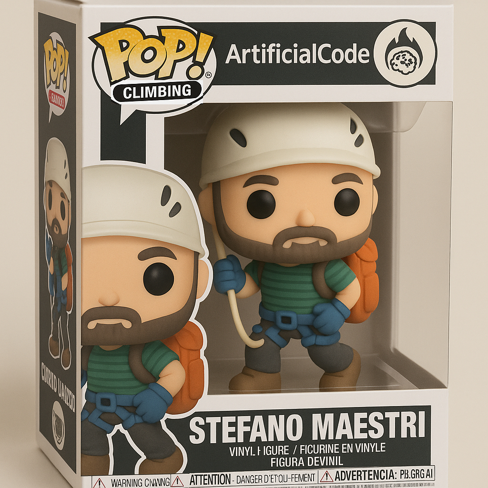

» AI CONF 2026
Stefano Maestri
Software and AI engineering manager · IBM
» But really, today
Drop feedback, grab these slides, get the toolkit — one QR for all of it.

Stefano Maestri
maeste.it · @maeste
It runs inside a second-level operating system. And most of that OS is already in your repo — usually broken.
// context first, then the measurement
The limits: what it's allowed to do, what it can reach, how its work gets checked.
sandbox · permissions · tools · tests · evals
How many times to repeat, and when to stop. A loop is not an automation — a loop has a decision inside it.
trigger · goal · verifier · state
An agent is a process running in a second-level OS — the harness draws the limits, the loop manages the process.
artificialcode.substack.com — "The agent is a process, and it runs in a second-level OS"
The full harness is LLM + repo + external apparatus (sandbox, skills, MCP, evals). The model and the cloud runtime are not yours. The repo is the slice you own — and it's where the verifier lives.
The loop is the new expensive, failure-prone part. A weak repo = a loop that doesn't converge. So we measure the repo — and fix what we find.
An agent ships plausible, confident work. Nothing in the repo pushes back. By the time a human notices, it's a PR — or worse, it's merged.
The failure is almost never the model. It's the environment the model ran in.
"What does this project even do? What conventions should I follow?"
→ INSTRUCT
"Where do tests go? What's the entry point? Why is this 2000 lines?"
→ NAVIGATE
"Did my change break anything? Is there CI? Do tests pass?"
→ VALIDATE
…and a fourth we'll meet shortly: can the agent run safely? 🛡️ SECURE
One scan = an x-ray of your slice of the harness, axis by axis.
The interactive radar lets you explore the model before touching your repo: move each axis 0–100, watch the shape change, and see the level jump. A balanced shape means well-rounded; a dent on SECURE means work to do.
Each level needs 80% of criteria met at that tier — you can't skip. Most repos in the wild sit at L1 or L2. Evidence-based: file presence + content quality, not folklore.
A set of Agent Skills that evaluate how well a codebase is prepared for agentic coding — and scaffold new projects to be ready from day one. AGENTS.md-first, cross-vendor, MIT.
Full diagnostic across the 7 dimensions. The x-ray.
Auto-generate missing files, ranked by impact.
Layered report + badge in .agent-ready/.
Delta vs previous scan — track progress.
Greenfield scaffolding — don't accrue debt.
Main entry point — routes to sub-commands.
scan → fix → report → diff · the closed loop. init for greenfield.
23% · L1
81% · L4
The difference isn't the agent. It's the codebase. Same language, same complexity.
7 dimensions, weighted, rolled into 4 axes. Portable layer (any agent) + target layer (per --agents).
AGENTS.md first (cross-vendor standard), not CLAUDE.md. CLAUDE.md = one-line symlink bridge. Scores conciseness — bloated instructions hurt. Scoped/hierarchical files.
specs/ with acceptance criteria, ADRs, issue/PR templates, ARCHITECTURE + comprehension signals. The agent reads intent, not just code.
If you do one thing: write a tight AGENTS.md (<200 lines: overview, build/test/lint, structure, conventions, safe-to-run). $ ln -s AGENTS.md CLAUDE.md
AGENTS.md — the cross-vendor standard for project context. Overview, build/test/lint, structure, conventions, safe-to-run. Bridge to CLAUDE.md with a symlink — one source of truth, no drift.
$ ln -s AGENTS.md CLAUDE.md # bridge, no drift
v2 penalizes instruction bloat — concise beats copied-and-drifted.
Repo map, semantic-nav amenability (typed, analyzable code), dependency clarity, README, file-size sanity. v2 retired the weak heuristics — directory depth & naming don't predict success.
Standard Skills, bundled scripts, MCP declaration + nav servers actually wired up (Serena/Sourcegraph) so the agent jumps to symbols instead of grepping.
Real levers — repo map, typed code, wired MCP — not naming folklore.
Repo maps, semantic-nav, MCP servers (Serena/Sourcegraph), file-size sanity — real levers, not naming folklore.
Test suite, documented + fast commands, coverage — and feedback quality: descriptive assertion messages (not bare asserts) + a type checker the agent can run.
CI runs tests + lint, automated formatting, pre-commit, governance: CODEOWNERS + Dependabot/Renovate.
Where most repos bleed points. Tests are the agent's only signal — skip VALIDATE and it's flying blind. This is the axis that decides if your loop can converge.
This is the axis that decides if your loop can converge at all.
Committed devcontainer, documented execution policy. LINCE.sh — a documented, repeatable OS-level sandbox. Credit for evidence in the repo, not self-report.
.gitignore secrets, .env.example, committed lockfiles, Dependabot. No unverifiable --sandbox flag.
Instructions only in trusted files; restrictive agent deny rules. The most-skipped axis — and the one that blocks real delegation.
You can't delegate what you can't confine. One dimension (D6) — for now.
Your repo has a number. Now you know which slice of the harness to build next.
Not a generic template — gaps ranked by impact, scoped to your repo.
init (greenfield) sets an opinionated baseline · fix (brownfield) remediates by impact. Same rubric, two entry points.
Overall 84% · 🏆 Optimized. Put this in your engineering blog, share with your team, track progress over time.
» 07 / 07
The loop, not the model, is now the expensive, failure-prone part. Measure the loop-readiness of your repo before you turn the model loose.
1. scan your repo — RisorseArtificiali/agent-ready-skill
2. read "L'agente è un processo…"
3. move ONE axis this week
Stefano Maestri
maeste.it · @maeste · AI Conf 2026